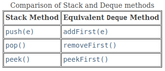

3. Deque
Overview
- The name deque (pronounced "deck") is short for double‐ended queue, which means that it is a data structure that allows insertions and removals from both ends (front and rear).
Interface java.util.Deque<E>
Modifier and Type |
Method |
Description |
|---|---|---|
boolean |
add(E e) |
Inserts the specified element into the queue represented by this deque (at the tail) if space is available, throws IllegalStateException if no space is available. |
void |
addFirst(E e) |
Inserts the specified element at the front of this deque, throws IllegalStateException if no space is available. |
void |
addLast(E e) |
Inserts the specified element at the end of this deque, throws IllegalStateException if no space is available. |
boolean |
offer(E e) |
Inserts the specified element into the queue represented by this deque (at the tail) if space is available, returns true upon success, false if no space is available. |
boolean |
offerFirst(E e) |
Inserts the specified element at the front of this deque unless it would violate capacity restrictions. |
boolean |
offerLast(E e) |
Inserts the specified element at the end of this deque unless it would violate capacity restrictions. |
E |
poll() |
Retrieves and removes the head of the queue represented by this deque, returns null if this deque is empty. |
E |
pollFirst() |
Retrieves and removes the first element of this deque, returns null if this deque is empty. |
E |
pollLast() |
Retrieves and removes the last element of this deque, returns null if this deque is empty. |
E |
remove() |
Retrieves and removes the head of the queue represented by this deque. |
E |
removeFirst() |
Retrieves and removes the first element of this deque. |
E |
removeLast() |
Retrieves and removes the last element of this deque. |
E |
peek() |
Retrieves, but does not remove, the head of the queue represented by this deque, returns null if this deque is empty. |
E |
peekFirst() |
Retrieves, but does not remove, the first element of this deque, returns null if this deque is empty. |
E |
peekLast() |
Retrieves, but does not remove, the last element of this deque, returns null if this deque is empty. |
E |
element() |
Retrieves, but does not remove, the head of the queue represented by this deque. |
E |
getFirst() |
Retrieves, but does not remove, the first element of this deque. |
E |
getLast() |
Retrieves, but does not remove, the last element of this deque. |
boolean |
removeFirstOccurrence(Object o) |
Removes the first occurrence of the specified element from this deque. |
boolean |
removeLastOccurrence(Object o) |
Removes the last occurrence of the specified element from this deque. |
int |
size() |
Returns the number of elements in this deque. |
Iterator<E> |
iterator() |
Returns an iterator over the elements in this deque in proper sequence. |
Iterator<E> |
descendingIterator() |
Returns an iterator over the elements in this deque in reverse sequential order. |
boolean |
contains(Object o) |
Returns true if this deque contains the specified element. |
void |
push(E e) |
Pushes an element onto the stack represented by this deque (at the head) if space is available, throws IllegalStateException if no space is available. |
E |
pop() |
Pops an element from the stack represented by this deque. |
boolean |
remove(Object o) |
Removes the first occurrence of the specified element from this deque. |
Implementation
- The Java Collections Framework provides four implementations of the Deque interface, including ArrayDeque and LinkedList.
- ArrayDeque utilizes a resizable circular array like our class ArrayQueue and is the recommended implementation because, unlike LinkedList, it does not support indexed operations.
Using a Deque as a Queue

Using a Deque as a Stack
